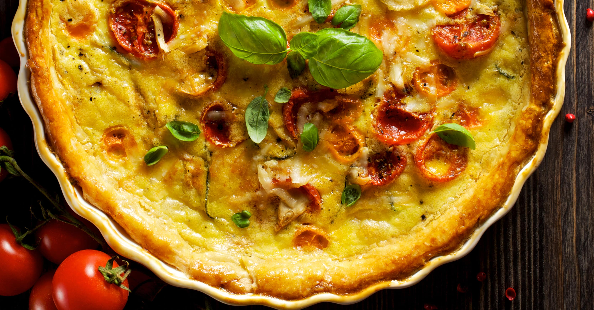

Quiche Lorraine
Ingrédients
Ail
Persil
Ail
Persil
Description Recette
Etape 1
Sortir la pâte. Couper les tomates
Etape 2
Sortir la pâte. Couper les tomates
Etape 3
Sortir la pâte.
Etape 4
Sortir la pâte. Couper les tomates
Etape 5
Sortir la pâte. Couper les tomates